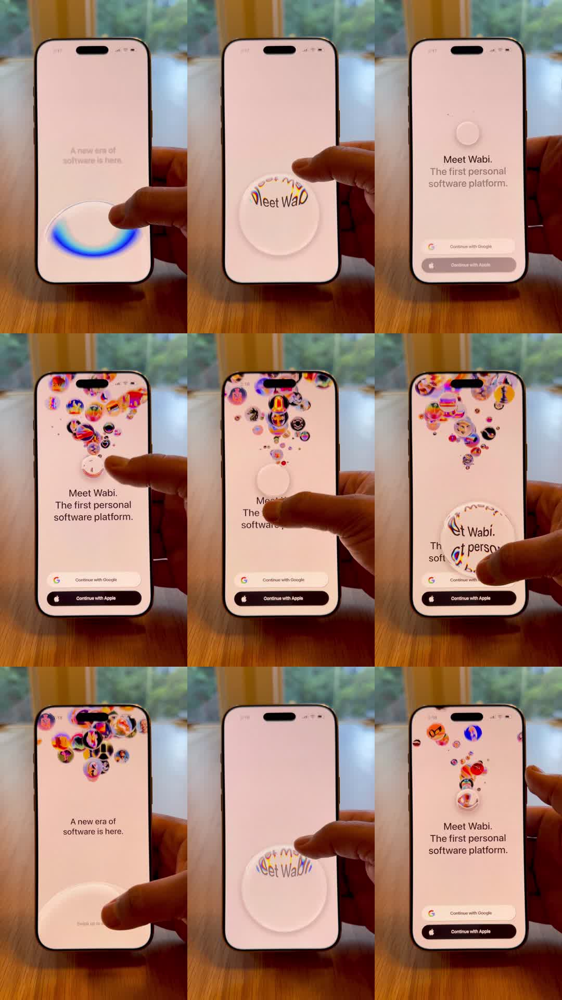

Glass shader: a real-phone demo of Wabi's onboarding - a frosted glass disc acts as a lens: text under it refracts and disperses ('Meet Wabi' warps with rainbow chromatic edges); when the disc lifts, dozens of tiny app-icon bubbles pour out of it and float upward like fizz, clustering at the top of the screen; screens: 'A new era of software is here.' -> 'Meet Wabi. The first personal software platform.' with Google/Apple auth buttons.
Media
Frame-by-frame

0-20%
Finger presses the glass disc over a blank pink screen; disc shows a blue refractive arc at its rim (dispersion highlight).
20-35%
Disc drags over the headline: letters bend and smear through the glass with RGB fringes; auth buttons sit bottom.
35-60%
Disc tips/lifts: a stream of colorful icon bubbles (photos, glyphs, memoji-like icons) erupts from beneath it and floats up.
60-85%
Bubbles cluster and jostle at the top forming a dense cloud; headline 'Meet Wabi. The first personal software platform.' revealed beneath.
85-100%
Reset loop: bubbles re-absorb as the disc returns center; 'A new era of software is here.' state restored.
Build prompt
Rebuild this interaction 1:1: a glass shader demo (Wabi onboarding) - a frosted glass disc acts as a lens: text under it refracts and disperses ("Meet Wabi" warps with rainbow chromatic edges); when the disc lifts, dozens of tiny app-icon bubbles pour out of it and float upward like fizz, clustering at the top of the screen. Screens: "A new era of software is here." -> "Meet Wabi. The first personal software platform." with Google/Apple auth buttons.
## Integration
Integration: stack-agnostic spec - springs given as stiffness/damping, timed motions as duration + curve, canvas/shader notes are perf guidance only; map every value to your framework and animation library of choice.
## Scene
Pink screen with headline text and bottom auth buttons. The glass disc: frosted circle with a blue refractive arc at its rim (dispersion highlight). On lift: dozens of tiny app-icon bubbles.
## Motion spec
Pattern: touch-driven lens + particle burst.
- Press/drag: disc follows the finger 1:1; text under it bends and smears through the glass with RGB fringes at the letters' edges; the rim shows a dispersion arc.
- Lift: bubbles emit from the disc over ~1s (ease-out spawn), each a tiny app icon; they float upward over 3-4s with gentle sine wobble and buoyancy, clustering softly at the top of the screen (soft collisions, no overlaps).
- Screens crossfade: "A new era of software is here." -> "Meet Wabi..." with the auth buttons (300ms).
## Calibration
- Refraction must warp the actual letterforms under the lens (displacement), not overlay a fake wavy text.
- Bubbles spawn over ~1s in a burst, then buoyancy takes over - two phases, visibly.
- Wobble is gentle sine (few px); bubbles are fizz, not balloons in wind.
## Reduced motion
Disc moves without refraction (plain frosted glass); bubbles float up in straight lines, no wobble.
## Don't miss
- The chromatic fringe at the lens rim (RGB separation) is the glass-material signature.
- Bubbles cluster at the TOP with soft collisions - they collect, they don't fly off-screen.
- The disc starts as a lens over content and becomes the bubble source - one object, two tricks.